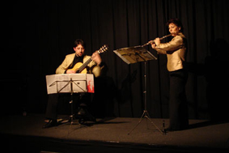

Il Curriculum Vitae di
Daniela

DANIELA PISANO
flautista milanese, si é diplomata al Conservatorio « G.Verdi » di Milano sotto la guida di
Marlaena Kessick, perfezionandosi poi a Vienna con Wolfgang Schulz e a Parigi
con Patrick Gallois, J.Pierre Rampal e J.L.Beaumadier per l’ottavino.
Vincitrice di concorsi nazionali e internazionali quali Stresa, Roma, Belveglio è laureata della Fondation Cziffra.
Ha vinto nel 1978 il concorso dell’ECYO, effettuando tournées sotto la direzione di Claudio Abbado.
Ha fatto parte dell’orchestra de ‘i Pomeriggi Musicali’ di Milano, dell’orchestra
‘les solistes de Versailles’ e dell’Orchestra italiana di flauti in qualità di solista.
Ha effettuato registrazioni discografiche per RIFI, Rusty Classica, Tirreno e recitals per la RAI TV,
la Radio Svizzera Italiana (Lugano), Radio France e la televisione Rumena.
Daniela Pisano tiene numerosi concerti come solista e in musica da camera in Francia, Italia,
Svizzera, Belgio, Germania, ex Yugoslavia, Romania e U.S.A.
Dal 1985 docente di flauto al Conservatoire Européen de Musique de Paris,
direttore musicale del Festival Opera Barga e direttore artistico dei Corsi musicali dell’Ensemble Eurydice,
gruppo che ha creato a Parigi nel 1989 e con il quale svolge un’intensa attività concertistica.
Dal 1996 é docente di flauto al Conservatoiro « S.Rachmaninoff » di Parigi.


DANIELA PISANO,
Die Mailaender Flotistin Daniela Pisano studierte zunaechst an der Musikhochschule ihrer Heim atstadt
( am Conservatorio "G. Verdi") bei Marlaena Kessick. Nach dem Diplom sezte Sie ihre Studien bei
Wolfgang Schulz an der
Wiener Musikhochschule und bei J. Pierre Rampal und Patrick Gallois in Paris
fort.
DANIELA PISANO wurde bei den Wettbewerden von Stresa, Rom und Belveglio
ausgezeichnet und war Stipendiantin der Stifftung Cziffra de Senlis. Sie hat im
Orchester der
Europaeschen Gemeinschaff und in der Mainlander Orchester
"i
Pomeriggi Musicali" gespielt. Kammenmusikkonzerte und Auftrittemit dem Ensemble
Eurydice
fuehren Pisano regelmaessig in mehrere Laender, Europas un die USA. Sie
hat fuer Rifi, Rusty classica,
Tirreno und Semptum Quantum aufgenommen.
DANIELA
PISANO ist kuenstlerische Leiterin des Musikfestivals in Barga (Italien) und
leitet den alljaehrigen Sommerkurs des Ensemle Eurydice in Levico Terme.. Sie
unterricht am Konservatorium "S. Rachmaninoff" in Paris.